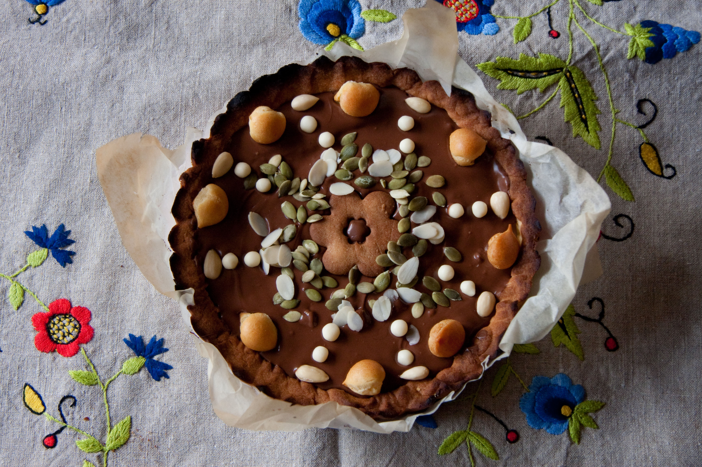

Mazurek
Description
Mazurek is a variety of very sweet, flat cake baked in Poland for Easter. According to Polish gastronomy coursebooks, typical mazurek is a cake that can be made of one or two sheets of short pastry or one sheet of short pastry covered with a sheet of butter sponge cake.
Ingredients
- Two and a half cups of flour
- One fourth of a cup of powdered sugar
- 200g of butter
- One tablespoon 18% sour cream
- Two egg yolks
- Topping; for example orange jam
- Optional toppings/decorations can include
- walnuts
- pecans
- raisins
- sliced almonds
Steps
- Put flour and butter in a bowl.
- Cut the butter with a sharp knife into tiny pieces, mixing with the flour.
- Add egg yolks, sugar, sour cream, and a pinch of salt.
- Knead well and form into a ball. Wrap in plastic wrap and let chill in fridge for about an hour.
- Roll out flat and place in large baking sheet (this should be enough for a 25x35cm/10x14in sheet) on top of parchment paper.
- Make little holes with fork in the dough.
- Bake for 15-20 minutes in 200°C.
- Let cool before spreading topping.
- Decorate with nuts or other toppings.